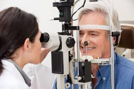
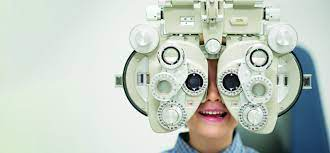

Oftalmologia
A oftalmologia é a área da medicina especializada na saúde dos olhos e responsável por cuidar da capacidade de visão das pessoas.
Os médicos oftalmologistas trabalham na prevenção, diagnóstico e tratamento de doenças que afetam os olhos, órbita, pálpebras e glândulas lacrimais. Além disso, acompanham doenças sistêmicas que podem causar graves problemas oculares, como diabetes mellitus, pressão alta e doenças reumatológicas.
Especialidades
- Catarata.
- Doenças Externas Oculares e Córnea.
- Estrabismo.
- Glaucoma.
- Miopia.
- Astiguimatismo.
- Neuro-oftalmologia.
- Oftalmopediatria.

